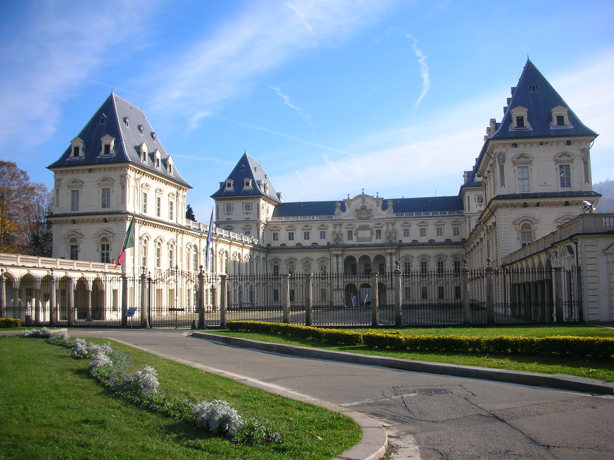

Tutti gli studenti di fisica italiani di corso di laurea triennale, magistrale, dottorato. Coinvolgerà studenti da tutte le università del paese, riunendoli per due giorni ricchi di scambi culturali ed occasioni formative.
Dal 15 al 17 maggio 2015. Le attività della conferenza inizieranno a tutti gli effetti nella mattinata di sabato 16 maggio, per continuare fino al primo pomeriggio di domenica 17. Per partecipare non dovrai saltare le lezioni.
A Torino. La CISF è organizzata presso il Dipartimento di Fisica dell'Università degli Studi di Torino. È possibile fare richiesta per l'alloggio in albergo a un prezzo vantaggioso.
Durante la conferenza ci sarà spazio per sessioni di seminari tenuti dagli studenti partecipanti. Coloro che ne facciano richiesta avranno a disposizione 15 minuti per esporre a tutti il proprio studio o la propria ricerca. Sono particolarmente incoraggiati ad intervenire i tesisti di laurea magistrale e i dottorandi. Alla presentazione giudicata migliore dai partecipanti verrà assegnato un premio in denaro!
